Building an NMR instrument around the class board
In this project, we'll take the class board, a little NMR console running at 2.1 mT and 89.4 kHz, and turn it into an instrument you can actually put a sample in. That means a housing for the boards, a probe that holds the coil and the sample, a magnet (well, a pair of coils) to make the field, and a way to see what the data should look like before we ever take any. Fundamentally, we're building this:
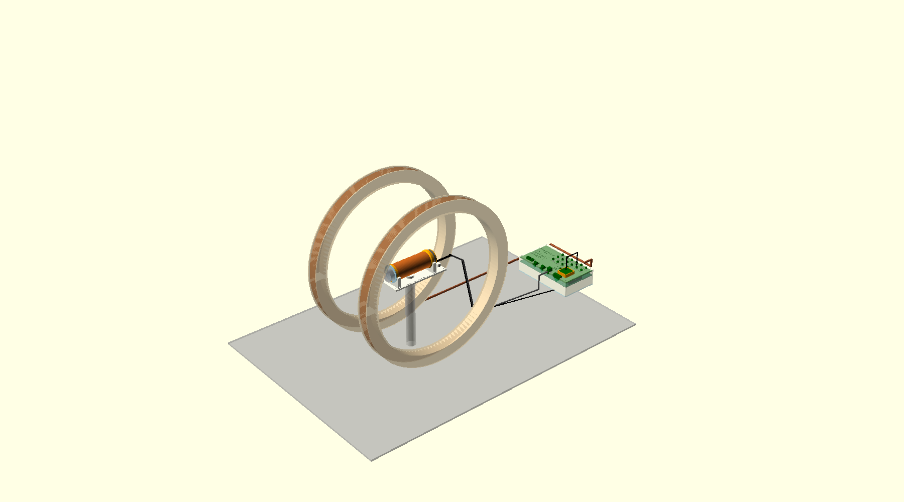
Three places, three jobs
This project has three different front doors, and it matters which one you're at:
Course showcase
"What is this project?"
One card on the class wall. It links here.
This site + simulator
"How is it built, how does it work?"
Public, on GitHub Pages. Simulation and explanation only; it can't reach the instrument.
instrument-XXXX.local
"Operate the real instrument."
Served by the ESP32 itself, on your local Wi-Fi. This is where real scans start.
The steps are mostly straightforward, so let's jump in! We're using OpenSCAD, because a design written as code can check its own numbers: every file prints its clearances, screw lengths and cable lengths when you open it.
The housing
Getting the boards in
Our housing has to hold the boards we designed in Workshop 2, so the first thing we need is a model of each one. KiCad exports them for us; they live in the course repository, which owns the boards (see Hardware & firmware). Open each one on its own first and find the connectors: 16 SMA jacks, the OLED, three LEDs and the terminals along the far edge.
Then stack them the way they go together: front panel face up, main board under it turned over, 11 mm between
their facing surfaces (an 8.5 mm socket on a 2.5 mm insulator). That's all boards.scad does, and it
uses the housing's own numbers, so the two can never drift apart.
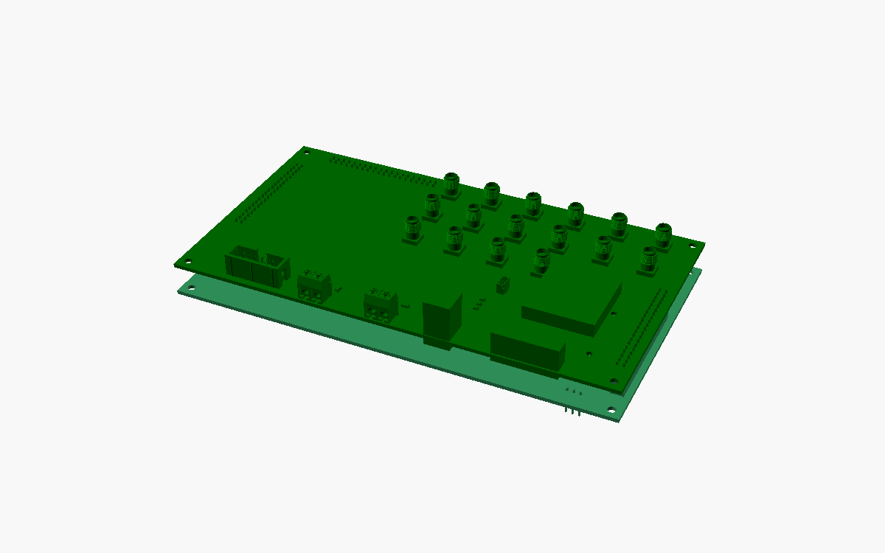
The ESP32 dev board hangs another 17 mm below the main board and isn't in the models at all, so it's drawn as a plain box. Its lowest point, 34.7 mm below the panel, sets how deep the housing is.
Two heights, one cover
Here's the catch the brief warns about. The OLED stands 13.8 mm above the panel, but an SMA jack only 9.8 mm, and a plug nut can only screw onto thread that pokes through the cover. A flat lid resting on the OLED would bury every thread 4 mm deep 😬
So the cover sits low, 3 mm above the panel face (just enough for the header tails), and the OLED gets its own little hood that comes up through a window in the cover. That leaves 4.8 mm of SMA thread above the cover: plenty for a nut and a washer.
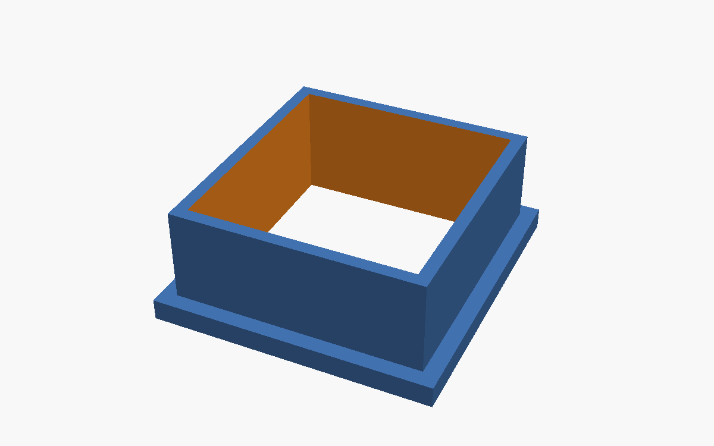
One more thing hides under the cover: two optocouplers stand 3.55 mm tall, taller than the 3 mm gap. They get pockets cut into the cover's underside, which leaves 0.95 mm of cover over them.
Sketch it, extrude it, cut it
The shell is a rounded box: 2 mm walls, 0.5 mm of clearance to the boards all round, open at the bottom. Every hole is drawn 0.3 mm bigger than the part that goes through it. Then come the cut-outs, all read from the board models rather than a ruler:
- 16 round holes for the SMA threads, and windows for the hood, the LEDs, Qwiic and the module header;
- the screw terminals on the far edge get a window in the cover and a notch in the front wall, so the wire comes in from the side and the screwdriver from the top;
- on the rear wall, openings for USB-C, the DC jack and the coil terminals, with room for the plug and the hand that holds it.
The shell prints upside down, cover on the bed. Every opening in a wall has a 45° V-shaped lower edge, so the printer can bridge it without supports.
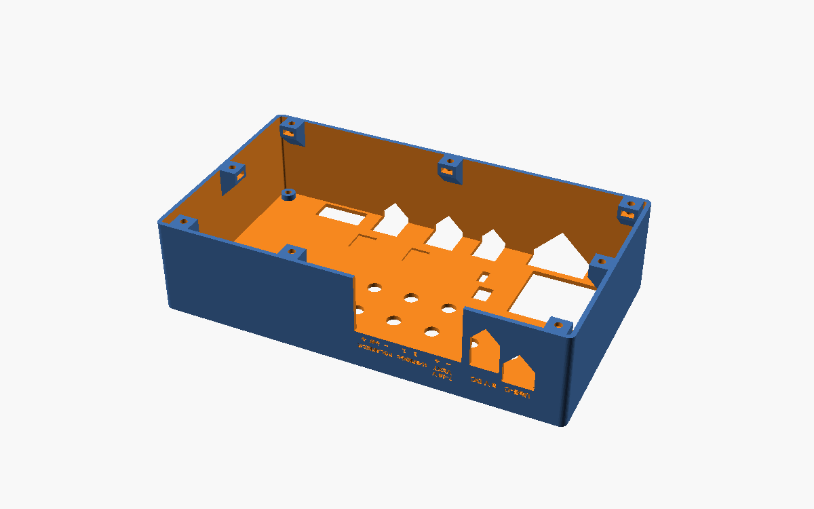
Embossing text (and something useful)
The cover hides the panel's silkscreen, so the housing has to say what's what. Every connector is named in text engraved 0.6 mm into the cover, and the terminals are labelled pin by pin.
The empty bit on the left got something more useful than a logo: a B0 ↔ frequency scale. Read the field you're running on the top, and the proton frequency to transmit at underneath (f = 42.58 kHz/mT × B0), plus the local-oscillator setting that goes with it.
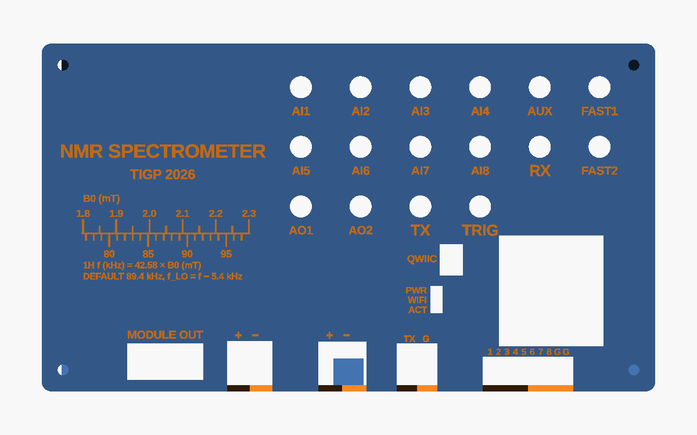
Nuts and bolts
The bottom is a laser-cut 3 mm acrylic plate, held by eight M3 × 8 screws into nuts that slide sideways into hexagonal pockets in little bosses on the walls (5.8 mm across the flats, 2.5 mm deep). The boards hang from the cover on their stand-offs: M3 × 12 from the top, through the cover, a 3 mm post and the panel.
Print the coupon first!
Before you spend hours printing a shell, print this. It has holes from 3.0 to 3.6 mm, one nut pocket, a 2 mm wall and label samples at 2.0, 2.5 and 3.0 mm, so it tells you how your printer fits before anything else does. The smallest labels on the cover are 2 mm, right at the limit, so check that row.
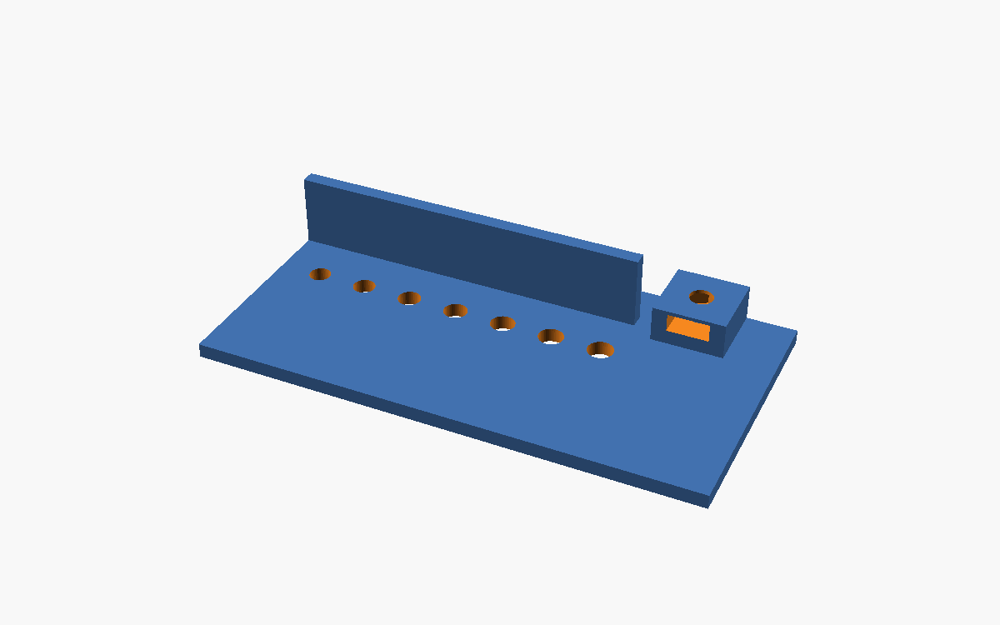
The probe
A coil you can wind
The probe is a former for the class coil: 400 turns of AWG26 on a 40 mm tube, 100 mm long, which works out to 2 layers of 222 turns and about 51 m of wire. A few tricks are borrowed from a working Earth's-field NMR build:
- 6 mm end cheeks, stiff enough to wind two layers under tension;
- the tube runs on past one cheek, so the leads and the cable get cable-tied to that stub, and a tug on the cable never reaches the winding;
- two layers end where they began, so both leads come out at the same end.
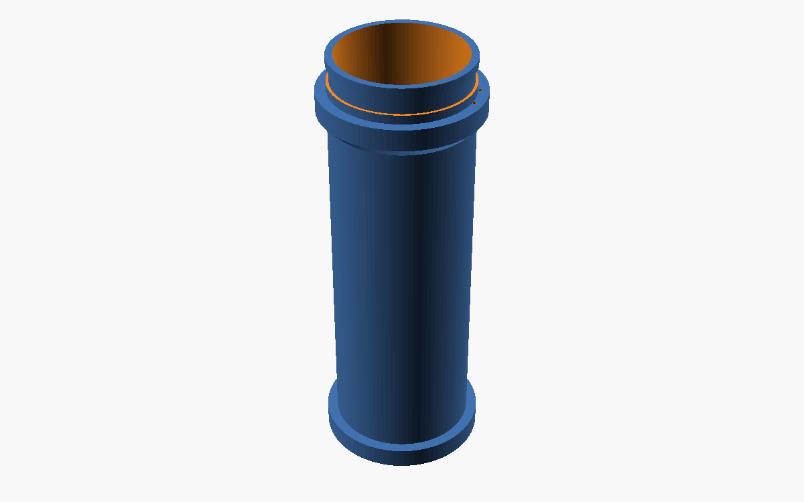
The sample holder
The sample is water in a standard 50 mL centrifuge tube. A printed sleeve centres it in the former's 36 mm bore: you push the tube in from the open end until its cap stops against the sleeve's flange. The former rests in a cradle with a brass 1/4"-20 nut for a camera tripod. No steel anywhere near the sample: use brass or nylon screws, and check the cable's plug with a magnet before you solder it 🧲
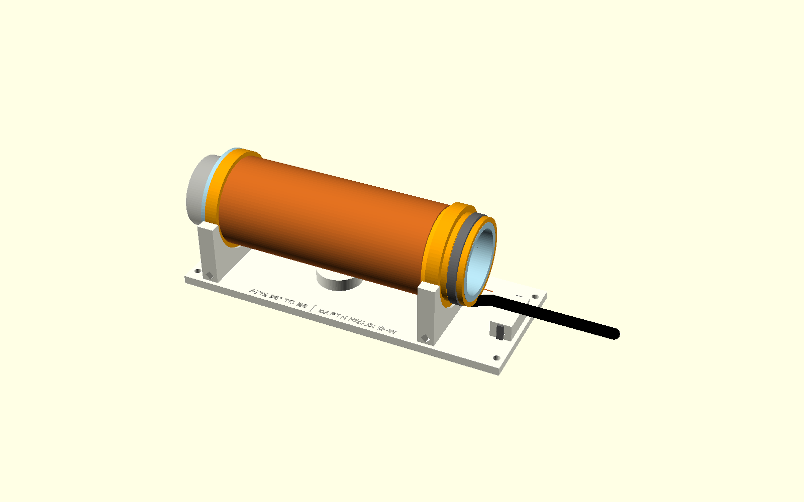
Making the field
The course repository doesn't specify the 2.1 mT magnet, so here's a reference design: a Helmholtz pair, R = 200 mm, 2 × 312 turns of AWG16 at 1.5 A. That's 10.3 Ω, 15.5 V and 23 W, inside what the board's H-bridge can drive. Fair warning: that's 9.2 kg of copper.
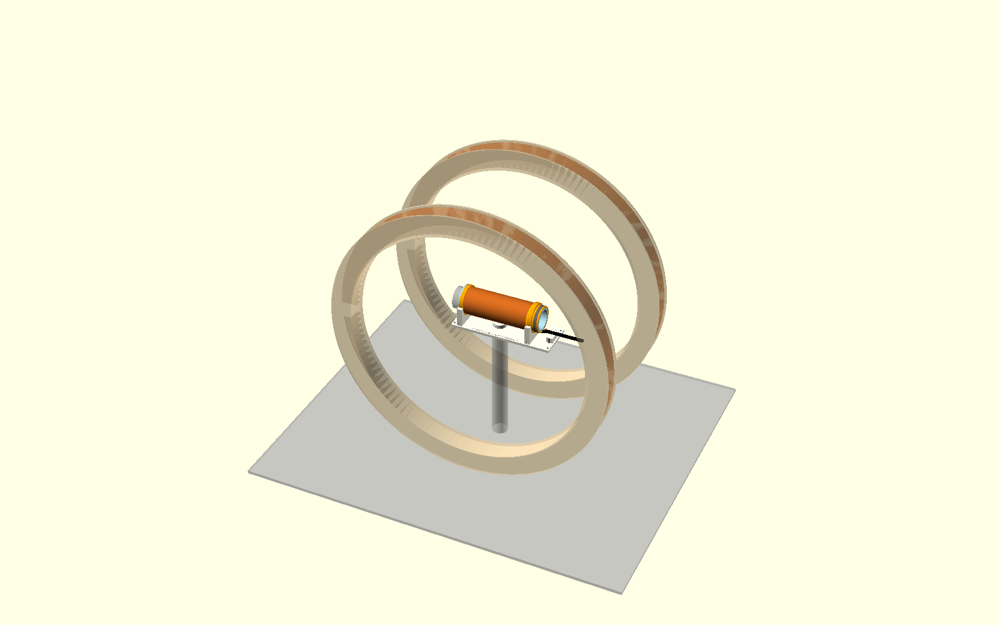
Data, simulated
Everything in this section is simulation. When the instrument takes its first real record, it goes here, labelled as a measurement.
The interactive bench
The simulator is a 3D model of the whole bench with a pulse experiment you can run. It solves the Bloch equations for thousands of bits of water in the coil pair's real field, the coil's real B1, the receiver tank and its noise. Fire a simulated pulse and watch the magnetization tip, dephase and come back as an FID and a spectrum. It is a representation of the firmware's pulse sequence, not a copy of it, and it can't drive the board (see below).
A spectrum you can hold
spectrum.py simulates records the way this probe would produce them, from the same numbers the CAD
uses. Following Jones et al. (J. Chem. Educ. 2021, 98, 1024), the result becomes a 3D print: a field
sweep, one spectrum per coil current. The ridge's slope is the coil pair's calibration (mT/A), and its width
is how uniform the field is (ppm). The axes are engraved round the rim, a groove marks half height for reading the
width, and the answers are engraved underneath, so you can check yourself.
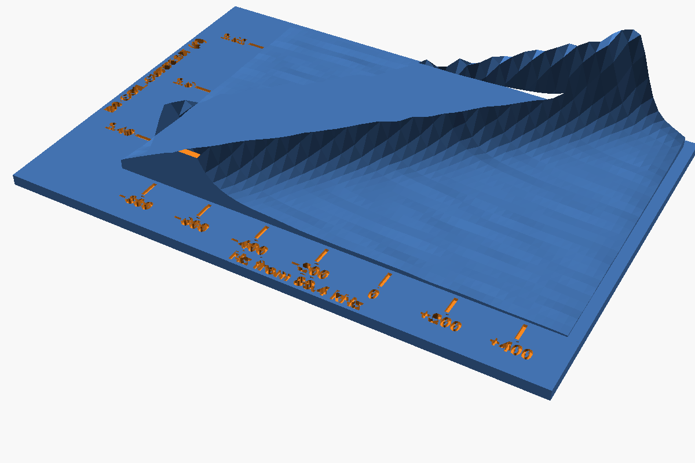
What the simulation found: drift
The field itself is fine: about 2 Hz (18 ppm) across the sample. But the H-bridge drives the coils with a fixed voltage. As 23 W warms the copper, its resistance rises, the current drops, and the line walks 138 Hz a minute. Averaging scans smears the line, and the slope you read off the model comes out at about half the true value. The ridge still looks perfectly straight, which is exactly what makes it a trap 🪤 Constant-current drive fixes it.
Fabrication files
Every part exists twice: once for the 3D printer, and once flat, for the laser cutter and the water-jet. The flat
versions are generated by export_cut.py, and CUT-LIST.md is the shopping list. The
housing becomes a glued 3 mm acrylic box, the B0 rings come off the water-jet, and the spectrum becomes eight
fins standing in a slotted plate.
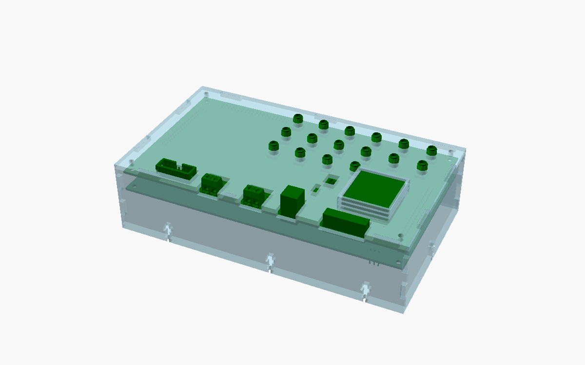
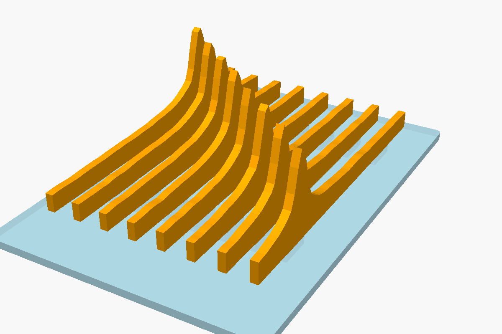
| Make | Files | Machine |
|---|---|---|
| Housing shell, OLED hood, test coupon | base-shell.stl, hood.stl, coupon.stl | 3D printer (coupon first) |
| Housing bottom plate | bottom-plate.dxf | laser, 3 mm acrylic |
| Coil former, sample sleeve, cradle | probe-former.stl, probe-sleeve.stl, probe-cradle.stl | 3D printer |
| Spectrum model | spectrum.stl | 3D printer |
| Everything flat: acrylic housing, probe parts, B0 rings, spectrum fins | fabrication/ and its CUT-LIST.md | laser and water-jet |
The course collects every student's housing from the course repository, so a hand-in copy of the
printed housing also sits in class-board-2026 (docs/students/yi-tsai/housing/). It's a snapshot,
made from this repository by tools/handin.py. Change the design here, not there.
Hardware & firmware: the real instrument
The boards, the firmware and the instrument's own web interface aren't in this project's repository. They're
built in the shared course repository, class-board-2026, which the instructor and other students also
change, and that repository is their source of truth. This project points to an exact version of it, commit
eef00d2
on main; the full list of files is in
hardware/README.md.
The pulse program runs on the ESP32
The real sequence is
runOneScan() in firmware/src/blocks/nmr/Sequencer.cpp.
For each scan it:
- optionally pre-polarizes the sample (
polarize_ms); - blanks the receiver, then switches the transmitter on for the 90° pulse (
t90_us); in echo mode it waitstau_usand gives a 180° pulse; - waits out the dead time while the coil is still ringing (
t_dead_us), then opens the receiver; - starts the ADC at
t_acq_start_usand records fort_acq_ms; - repeats
n_avgtimes,t_repeat_msapart, cycling the pulse phase (CYCLOPS).
The default values live in the firmware's
NMR-FIRMWARE.md,
not here, so they can't go stale. The course treats the firmware's real-hardware path as unverified until it's
been measured on a board.
Running a real scan
Connect a phone or laptop to the instrument's Wi-Fi network and open instrument-XXXX.local
(the board serves this page itself, from
host/pwa/panels/nmr.js).
Then go to NMR, press Apply settings, then Start; Pulse fires a single test pulse. From a laptop:
instrument nmr --n-avg 8 --csv fid.csv. This public site can't do any of that: it's served over HTTPS
from the internet, and the instrument is a plain local-network device.
What stands between this and a first real signal
- TX and RX share one coil. The receiver's clamp diodes sit right across the transmitter, which pushes about 1.54 A through R813, past the amplifier's 1.5 A limit, so every scan would abort. This needs a decision on the board.
- B0 needs constant current. That's the biggest single lever (see drift).
instrument.pyputs a Hann window over the whole record. It's nearly zero right where a short FID lives, so the spectrum it computes would hide the signal.
When it runs, the first samples are: water; a D₂O blank, to prove the line is really NMR; frozen water, because solids are invisible at 89 kHz and this shows it; CuSO₄ and agarose series for T1 and T2; and finally ¹⁹F in hexafluoro-2-propanol, to measure γF/γH = 0.9408.